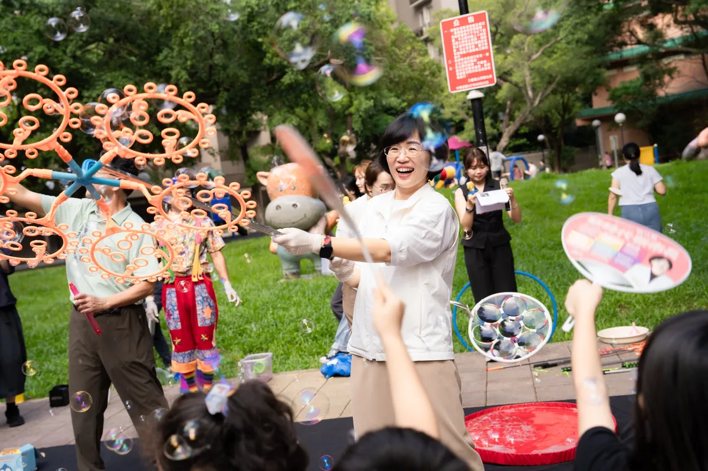
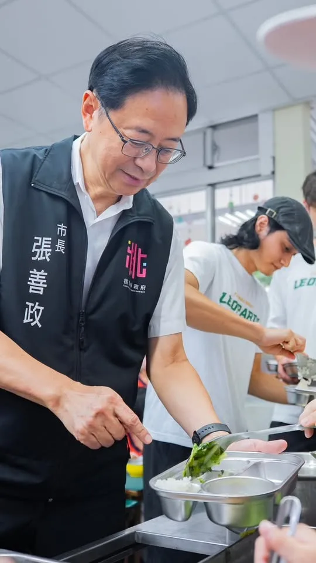
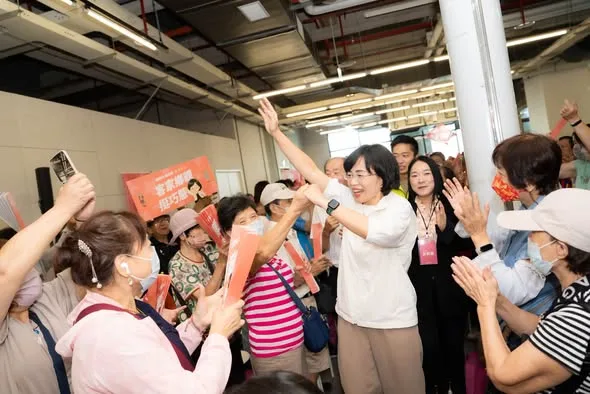

蘇巧慧su.chiaohui
@su.chiaohui:我支持✨遊戲宜居城市！ 我會以孩子的95公分視角，重新檢視並改善公共空間，也會打造適合青少年的戶外遊憩空間！讓新北成為兒少快樂成長、大膽探索的城市！
Posts
@su.chiaohui:我支持✨遊戲宜居城市！ 我會以孩子的95公分視角，重新檢視並改善公共空間，也會打造適合青少年的戶外遊憩空間！讓新北成為兒少快樂成長、大膽探索的城市！


#開學日 孩子要健康成長，吃得好、愛運動都很重要。 今天是開學日，我來到仁和國小，特別邀請台啤永豐雲豹的新生代球星 #高錦瑋、#林信寬，和小朋友一起吃午餐。 上任以來，我們率先六都推動營養午餐免費，持續從營養、食材到餐點品質全面升級，讓孩子吃得更營養、也吃得更開心。 今年新學期起，營養午餐每餐再加碼補助6元，同時增加 #大塊肉，每週提供2次、每次100克以上肉類，也推出孩子喜歡的 #雙主菜幸福餐，讓午餐更加營養豐盛。 桃園營養午餐持續使用在地優質食材，從黑毛豬、雞肉、番茄，到產銷履歷白米與當季水果，讓孩子每天都能吃到安心、新鮮的食材。市府也持續透過食安聯合稽查，從廚房衛生到食材來源嚴格把關。 今天也看到仁和國小的孩子們，從低碳飲食、惜食教育，到回收廚房回鍋油製作家事皂，把每天的午餐變成一堂生動的永續課程。 新學期開始，期待每個孩子都能在校園裡快樂學習、健康長大！

今天看到文哲兄到台南輔選時的公開喊話，龍介要向柯市長，與民眾黨的好朋友們報告： 為了台南鄉親的福祉，我們在基層早就已經「藍白合」作伙拼了大半年！ 大家都知道，要在台南打破一黨獨大三十年的傲慢，過程極為艱辛。但龍介一向秉持理念相同，為百姓好，大家都可以合作的江湖道義。這大半年來，民眾黨在台南提名的幾位優秀年輕人，龍介早就默默用行動在相挺。 在新營，我和國昌兄親自站台，力挺蔡育輝與白營陳詩薇，高喊「一票投藍、一票投白」，就是要徹底打破台南溪北邊緣化的僵局！ 在街頭，各大重要路口立起的看板、路上行駛的公車廣告、基層拜票的場合，藍白小雞早就同框造勢，展現在野團結氣勢！ 在議會，這半年來，針對民進黨留下的光電爭議、土地弊案、偏鄉醫療不足、以及弱勢社福破網，藍白小雞們聯手砲轟市府，展現最強的監督火力！ 身為國民黨台南市黨部主委，龍介早就公開承諾：這次我們大雞帶小雞，目標全力協助民眾黨在台南市議會搶下至少3席、成立黨團！ 未來，聯合競選，聯合造勢，分進合擊，都會按部就班安排，讓有衝勁、有理想的少年活水，服務鄉里，一展長才。

保護好每一個孩子，讓孩子安心長大，是我們最重要的責任，制度之間可能出現的空隙，我們希望再往前一步，把它補起來。 現行全國一致的兒少保護機制，依照行為人身分區分「家內」與「家外」，對應的風險評估、處遇方式也有所不同。但實際生活中，有些人雖然不是家人、沒有同住，卻經常出入家裡，跟家庭關係密切。 依照現行標準，這些人會被歸類為「家外人士」，不適用SDM安全評估，但我們從實際案件中看到，對孩子來說，風險不會因為一個人被歸類為「家外」，就真的離家很遠。 在臺北，我們決定主動往前多做一步。 「類家內成員納入SDM安全評估」 未來，這些與孩子、家庭密切接觸的「類家內成員」，我們會直接納入SDM安全評估。不只看身分，更要看他實際和孩子有多近、與家庭互動有多深，把可能的風險看得更仔細。 「強化第二道防線」 面對孩子的安全，我們希望重要的判斷，都能多一雙專業的眼睛再看一遍。 未來，除了第一線社工與督導，也將加入外部專業複核及跨網絡共同檢視。多一個專業的人一起判斷，多一次討論就多一道保障。 「短期家庭式庇護處所」 當孩子需要暫時離開原本的環境，但是否安置仍需要進一步評估時，我們會增設短期家庭式庇護處所，讓孩子與家庭先有一個安全的地方落腳。 不讓需要幫助的家庭，在最需要支持的時候無處可去，也讓安置資源能留給真正需要長期照顧的孩子。 「對第一線社工更多支持」 要保護好孩子，也要支持每天站在第一線、陪在孩子身邊的人。 第一線社工、安置機構照顧人員，面對的是一個又一個真實的家庭和孩子。這些工作很辛苦，需要專業以及很大的耐心。 我們不只要求制度做得更好，也要給第一線更實際的支持。 接下來，臺北會充實安置機構夜間照顧人力、重新檢討薪資與人力條件，也持續推動久任獎助。希望讓願意留下來照顧孩子的人，有更好的工作環境，也有更多力量陪孩子走得更久。 兒少保護，沒有哪一天可以說「這樣就夠了」。 我們每一天都要重新檢視，還有哪些地方可以做得更好。 能補上的地方，我們努力補上；能再多一道保障，我們就多努力做一道。 希望每一個孩子，都能被好好保護，在最需要幫忙的時候，都有人能接住。
@hsiehlungchieh:身心障礙網友陳情在臺南難找工作

巧慧當市長 提高預算！做勞工家庭後盾！ 非常感謝超過一百個工會團體相挺為我成後援會，過去十年，我們一起在立法院推動各項法案修訂，一步步改善勞動環境。 大家在各行各業努力打拚，共同締造了台灣的經濟繁榮，因此未來我擔任市長，將會 #提高勞工相關預算，而且不只照顧勞工，更要照顧工會、照顧勞工家庭，全方位做大家的後盾！ ✅ 巧慧挺勞工 1. 調升職災慰問金、勞資爭議涉訟補助 2. 加碼補助高溫防暑設備 3. 擴大推動 #多元職訓、職務再設計，支持中高齡再就業 4. 獎勵資深人才加入青創團隊擔任創業教練 ✅ 巧慧挺工會 1. 改善工會辦公空間 2. 調高職業工會行政事務費、會務經費 3. 建立市府與工會 #直接對話機制 ✅ 巧慧挺家庭 1. 國中小免費營養午餐 2. 0-6歲 #免門診與住院部分負擔 3. 早產兒3萬元照顧津貼 4. 鼓勵 #企業組隊設托，友善職場獎勵金最高100萬元 5. 長輩假牙補助最高5萬元 6. 敬老卡升級 巧慧當市長，會全力做新北超過216萬勞工朋友的後盾，讓大家都能在新北安居樂業，一起迎接新北的新時代！

來三重和孩子們一起同樂 打造友善育兒的新北市！ 這幾天，我接連參加 #李倩萍、 #顏蔚慈 議員舉辦的親子活動，和孩子一起看精彩的《蟲蟲馬戲樂園》，還一起在公園玩超有趣的泡泡，大家真的都玩瘋了！ 最開心的是，一到現場就聽到好多孩子大喊「水獺媽媽！」還主動跟我打招呼、擊掌，大家都有認真聽故事、學台語喔！ 除了陪伴孩子長大，我也要做爸爸媽媽最可靠的隊友。未來，我要打造95公分視角城市，從孩子的高度重新檢視公共空間，也會推動0到6歲看病免門診及住院部分負擔、6歲以下腸病毒及輪狀病毒疫苗免費，並增加 夜間托育、建置 臨時托育查詢平台，讓育兒家庭有更大的支持。 我也會和倩萍、蔚慈一起努力，推動 「三重2.0」，加速第二行政中心、市圖第二總館、三重聯醫第三醫療大樓等重大建設；在蘆洲推動蘆南和蘆北重劃區、蘆社大橋，緊盯捷運北環段工程進度。 我會繼續帶著新北隊努力，為大家打造更友善育兒家庭的新北市！


選戰最後90天，謝謝每一位姐妹的相挺，讓我們繼續堅定同行、團結努力，一起開創欣欣向榮的新台中！ 超過一千名姐妹從大台中各地來到現場，現場座無虛席，甚至還緊急加開場廳與座椅，大家加油聲一波接一波，讓我感受到滿滿的支持與力量。 姐妹們最了解家庭需要，也最清楚市民生活大小事，未來我將從大家最關心的事情出發，用「行動、溫度、創新」帶領台中力拚三個第一： ✨ 捷運路網推動效率第一 ✨ 全齡照顧六星福利第一 ✨ 無人載具產業聚落第一 不只如此，我還要在財政許可並經市議會通過下，推動 #普發現金 ，讓市民共享城市發展紅利。

#心純姐妹會 正式成立！ 超過一千名姐妹從大台中各地來到現場，現場座無虛席，甚至還緊急加開場廳與座椅，大家加油聲一波接一波，讓我感受到滿滿的支持與力量。 每一位溫柔堅韌的姐妹，都是民主的花朵，也是地方最溫暖的夥伴，未來我們會一起走進大台中29區，讓民主花朵在台中各地綻放。 姐妹們最了解家庭需要，也最清楚市民生活大小事，未來我將從大家最關心的事情出發，用「行動、溫度、創新」帶領台中力拚三個第一： ✨ 捷運路網推動效率第一 ✨ 全齡照顧六星福利第一 ✨ 無人載具產業聚落第一 從生育、長輩照顧，到孩子每天的營養午餐，都要照顧得更周全，而且我還要在財政許可並經市議會通過下，推動 #普發現金 ，讓市民共享城市發展紅利。 選戰最後90天，謝謝每一位姐妹的相挺，讓我們繼續堅定同行、團結努力，一起開創欣欣向榮的新台中！ #心存大台中 #市長換欣_台中創新

#發兩萬、#打皮蛇、#卡好用！今晚來到西區均安宮，一上臺就和王育敏、羅廷瑋委員一起喊出三句最實在的「幸福加給」💪 國民黨在國會持續爭取全民普發2萬元；在臺中，將優先針對65歲以上長者，以及重症、弱勢等高風險族群，經醫師評估後補助帶狀疱疹疫苗，未來再視財政逐步擴大補助範圍；敬老愛心卡每月1,000點不減，當月未使用完的點數可累積，並於年底歸零。計程車、掛號、指定藥局、YouBike及國民運動中心都能用，也規劃 #一定額度可以到農漁會購物，真正「卡好用」！ 啟臣把競選總部設在西區，因為這裡承載著臺中的根與靈魂。未來要活化歷史空間、推動 #一市場一特色，改善公有市場的燈光、空調及整體購物環境，並串聯商圈、購物節與會展人流，讓老城找回榮光，也為年輕人創造新機會。 從長輩照顧到親子友善，從百年市場到文化復興，臺中升級不只是蓋更多建築，更要讓每一代都能在這裡安居、圓夢！ #臺中升級 #幸福加給 #西區 #舊城復興 #臺中啟程 #打造旗艦城

我支持 #遊戲宜居城市！ 我會以孩子的 #95公分視角，重新檢視並改善公共空間，也會打造適合青少年的戶外遊憩空間！讓新北成為兒少快樂成長、大膽探索的城市！

From children's smiles to their needs for assistive devices, Zhang Mingyou keeps every little thi...
@su.chiaohui:開學囉！上週特別到團膳廚房關心孩子們吃得好不好！我們從環境清潔、食材挑選、烹煮到供餐，親自瞭解每一個細節。 我在今年一月提出✨國中小免費營養午餐，從這學期開始正式上路！未來，我會持續精進校園供餐品質，包含升級食安設備、鼓勵國產食材、推廣食農教育等等，讓新北的孩子吃得健康、安全又美味❤️
Disabled internet user petitions about the difficulty of finding a job in Tainan

身心障礙網友陳情在臺南難找工作

@su.chiaohui:來三重和孩子們一起同樂 打造友善育兒的新北市！ 這幾天，我接連參加李倩萍、顏蔚慈議員舉辦的親子活動，和孩子一起看精彩的《蟲蟲馬戲樂園》，還一起在公園玩超有趣的泡泡，大家真的都玩瘋了！ 最開心的是，一到現場就聽到好多孩子大喊「水獺媽媽！」還主動跟我打招呼、擊掌，大家都有認真聽故事、學台語喔！ 我會繼續帶著新北隊努力，為大家打造更友善育兒家庭的新北市！

恭祝瑤池金母聖誕千秋，祝福大家平安順遂、福慧增長！ 世杰到中壢慈惠堂、大坑慈慧慈惠堂、上大慈惠堂及中原紫雲禪寺分宮中壢玉玄宮，和鄉親們一起為母娘祝壽。 信仰凝聚人心，也牽起在地濃濃的人情味。每一次參與地方活動，不只是獻上祝福，更是第一線傾聽市民心聲的寶貴時刻，從一次次聊天分享中，聽見大家對地方、對未來、對美好生活的共同期待。 其中，中壢玉玄宮特別邀請13家弱勢機構、共500多位院生一起共襄盛舉，現場笑聲不斷、溫馨熱絡，展現母娘慈悲為懷、庇佑眾生的精神，讓需要關懷的朋友感受到社會的溫暖，這也是世杰投入公共事務、跟大家一起持續努力的意義❤️ 在這個殊勝的日子，誠心祈願母娘慈悲護佑、福澤眾生，願我們生活的桃園，平安、安定、越來越好！

@a_chun1973:選戰最後90天，謝謝每一位姐妹的相挺，讓我們繼續堅定同行、團結努力，一起開創欣欣向榮的新台中！ 超過一千名姐妹從大台中各地來到現場，現場座無虛席，甚至還緊急加開場廳與座椅，大家加油聲一波接一波，讓我感受到滿滿的支持與力量。 姐妹們最了解家庭需要，也最清楚市民生活大小事，未來我將從大家最關心的事情出發，用「行動、溫度、創新」帶領台中力拚三個第一： ✨ 捷運路網推動效率第一 ✨ 全齡照顧六星福利第一 ✨ 無人載具產業聚落第一 不只如此，我還要在財政許可並經市議會通過下，推動 #普發現金 ，讓市民共享城市發展紅利。

暑假尾聲，林延鳳議員舉辦水上親子活動，最適合帶孩子一起玩水、開心放電！ ⠀ 爸媽帶孩子出門，不只希望他們玩得開心，心裡也會擔心通學環境、衛生和活動安全。而延鳳議員長期深耕士林北投，除了關心兒童福利與育兒資源，也持續為校園安全、通學環境及友善親子空間發聲。 ⠀ 育兒不能是「孤獨育兒」，更不該成為一場考驗家長體力與運氣的障礙賽。台北應該用完善的環境與政策，跟家長一起照顧孩子。因此，我提出「家長版1999」、帶孩子走進更多藝文場所的「親子同行卡」，以及讓10萬名家長獲得喘息支持的「家庭一站通」。 ⠀ 未來，我會和延鳳一起努力，讓台北成為一座孩子安心成長、家長有人支持的城市。 #台北順起來 #你的市長沈伯洋
0830受訪-1 #受訪 #市政辯論 #安置量能 #社工量能


#開學日 孩子要健康成長，吃得好、愛運動都很重要。 今天是開學日，我來到仁和國小，特別邀請台啤永豐雲豹的新生代球星 #高錦瑋、#林信寬，和小朋友一起吃午餐。 上任以來，我們率先六都推動營養午餐免費，持續從營養、食材到餐點品質全面升級，讓孩子吃得更營養、也吃得更開心。 今年新學期起，營養午餐每餐再加碼補助6元，同時增加 #大塊肉，每週提供2次、每次100克以上肉類，也推出孩子喜歡的 #雙主菜幸福餐，讓午餐更加營養豐盛。 桃園營養午餐持續使用在地優質食材，從黑毛豬、雞肉、番茄，到產銷履歷白米與當季水果，讓孩子每天都能吃到安心、新鮮的食材。市府也持續透過食安聯合稽查，從廚房衛生到食材來源嚴格把關。 今天也看到仁和國小的孩子們，從低碳飲食、惜食教育，到回收廚房回鍋油製作家事皂，把每天的午餐變成一堂生動的永續課程。 新學期開始，期待每個孩子都能在校園裡快樂學習、健康長大！

@hsiehlungchieh:今天看到文哲兄到台南輔選時的公開喊話，龍介要向柯市長，與民眾黨的好朋友們報告： 為了台南鄉親的福祉，我們在基層早就已經「藍白合」作伙拼了大半年！ 大家都知道，要在台南打破一黨獨大三十年的傲慢，過程極為艱辛。但龍介一向秉持理念相同，為百姓好，大家都可以合作的江湖道義。這大半年來，民眾黨在台南提名的幾位優秀年輕人，龍介早就默默用行動在相挺。 在新營，我和國昌兄親自站台，力挺蔡育輝與白營陳詩薇，高喊「一票投藍、一票投白」，就是要徹底打破台南溪北邊緣化的僵局！ 在街頭，各大重要路口立起的看板、路上行駛的公車廣告、基層拜票的場合，藍白小雞早就同框造勢，展現在野團結氣勢！ 在議會，這半年來，針對民進黨留下的光電爭議、土地弊案、偏鄉醫療不足、以及弱勢社福破網，藍白小雞們聯手砲轟市府，展現最強的監督火力！ 身為國民黨台南市黨部主委，龍介早就公開承諾：這次我們大雞帶小雞，目標全力協助民眾黨在台南市議會搶下至少3席、成立黨團！ 未來，聯合競選，聯合造勢，分進合擊，都會按部就班安排，讓有衝勁、有理想的少年活水，服務鄉里，一展長才。
開學囉！上週特別到團膳廚房關心孩子們吃得好不好🤩 我們從環境清潔、食材挑選、烹煮到供餐，親自瞭解每一個細節。 我在今年一月提出 #國中小免費營養午餐，從這學期開始正式上路！未來，我會持續精進校園供餐品質，包含升級 #食安設備、鼓勵 #國產食材、推廣 #食農教育 等等，讓新北的孩子吃得健康、安全又美味！

身心障礙網友陳情在臺南難找工作

@su.chiaohui:巧慧當市長 提高預算！做勞工家庭後盾！ 非常感謝超過一百個工會團體相挺為我成後援會，過去十年，我們一起在立法院推動各項法案修訂，一步步改善勞動環境。 大家在各行各業努力打拚，共同締造了台灣的經濟繁榮，因此未來我擔任市長，將會提高勞工相關預算，而且不只💛照顧勞工，更要💛照顧工會、💛照顧勞工家庭！ 全力做新北超過216萬勞工朋友的後盾，讓大家都能在新北安居樂業，一起迎接新北的新時代！

@schuanglawyer:恭祝瑤池金母聖誕千秋，祝福大家平安順遂、福慧增長！ 世杰到中壢慈惠堂、大坑慈慧慈惠堂、上大慈惠堂及中原紫雲禪寺分宮中壢玉玄宮，和鄉親們一起為母娘祝壽。 信仰凝聚人心，也牽起在地濃濃的人情味。每一次參與地方活動，不只是獻上祝福，更是第一線傾聽市民心聲的寶貴時刻，從一次次聊天分享中，聽見大家對地方、對未來、對美好生活的共同期待。 其中，中壢玉玄宮特別邀請13家弱勢機構、共500多位院生一起共襄盛舉，現場笑聲不斷、溫馨熱絡，展現母娘慈悲為懷、庇佑眾生的精神，讓需要關懷的朋友感受到社會的溫暖，這也是世杰投入公共事務、跟大家一起持續努力的意義❤️ 在這個殊勝的日子，誠心祈願母娘慈悲護佑、福澤眾生，願我們生活的桃園，平安、安定、越來越好！

從幸福城到旗艦城，臺中的下一步，要讓每個生活問題都有解方！💪 今天受邀出席 #城市治理綜合座談，與柯文哲理事長、民眾黨黃國昌主席及各界專家交流。城市治理不是喊口號，而是要把市民每天面對的問題，一件一件解決。 在主題分享中，我談到臺中的下一階段，要發揮精密製造優勢，發展AI機器人與會展經濟，結合海空雙港，讓世界看見臺中、讓訂單走進臺中，從幸福城升級為代表臺灣的旗艦城市。 主題分享後，進入QA階段，大家問得直接，我也具體回答。八年前，市民最關心空氣；現在，交通排第一。免費公車不是只少收10元，更要重整路線、增加班次、提升準點率並改善司機待遇；透過四大轉運中心，串聯快速公車、YouBike與社區接駁。捷運必須多線齊發，清泉崗機場也應朝千萬人次規模擴建，讓 #中進中出 更加便利。 有市民問到中西區老屋與閒置空間的問題。對我來說，中西區不是臺中的過去，而是找回城市靈魂、重新出發的地方。我把 #競選總部設在西區，就是要從舊城出發，活化百年市場與新民街倉庫群，引進音樂、展演及青年創意，讓舊城真正活起來。 也有市民關心，臺中能不能擁有自己的親子探索樂園？我支持積極評估，並持續增加親子設施、特色公園與共融遊戲場，讓年輕人敢生、養得起，更讓整座城市陪孩子好好長大。 近300萬鄉親一起組成最強臺中隊，臺中好，中臺灣就更好；中臺灣更好，臺灣一定更好！ #從幸福城到旗艦城 #治理從地方開始 #臺中啟程 #打造旗艦城

敢去就有路！巧慧帶大家一起迎接新時代！ 非常感謝今天爆場的客家鄉親給我支持和力量，更感謝金曲歌后 米莎 Misa特別到現場獻唱 ，給我祝福。 在米莎的金曲 #腳跡 中有一句歌詞「敢去就有路。」聽了真的特別有感觸。從一開始宣布參選新北市長，到今天最後倒數90天，我和大家一起前進，也越來越多人站出來和我們並肩前行。 今天我和大家報告我們的客家政見： ✅廣入校園社區，推廣客語及技藝課程 ✅擴大辦理 #客家信仰文化活動，挹注客家文史團體和地方社團 ✅媒合產業 #跨域合作，舉辦以客家為主體的商展和影展 ✅盤點低利用公有空間，提供客家青年更多新創孵育基地 ✅結合新科技，打造 #客家文化AI資料庫、#新北AI客語學習平台 ✅擴大 #伯公照護站設置，#客家幣使用範圍 最後階段，我們一起拚，一起讓新北市迎接新時代！
#發兩萬、#打皮蛇、#卡好用！今晚來到西區均安宮，一上臺就和王育敏、羅廷瑋委員一起喊出三句最實在的「幸福加給」💪 國民黨在國會持續爭取全民普發2萬元；在臺中，將優先針對65歲以上長者，以及重症、弱勢等高風險族群，經醫師評估後補助帶狀疱疹疫苗，未來再視財政逐步擴大補助範圍；敬老愛心卡每月1,000點不減，當月未使用完的點數可累積，並於年底歸零。計程車、掛號、指定藥局、YouBike及國民運動中心都能用，也規劃 #一定額度可以到農漁會購物，真正「卡好用」！ 啟臣把競選總部設在西區，因為這裡承載著臺中的根與靈魂。未來要活化歷史空間、推動 #一市場一特色，改善公有市場的燈光、空調及整體購物環境，並串聯商圈、購物節與會展人流，讓老城找回榮光，也為年輕人創造新機會。 從長輩照顧到親子友善，從百年市場到文化復興，臺中升級不只是蓋更多建築，更要讓每一代都能在這裡安居、圓夢！ #臺中升級 #幸福加給 #西區 #舊城復興 #臺中啟程 #打造旗艦城

0830受訪 #受訪 #市政辯論 #兒童保護 #選舉補助款 #台北智庫-台北研究院 #城市規劃 #運動驛站